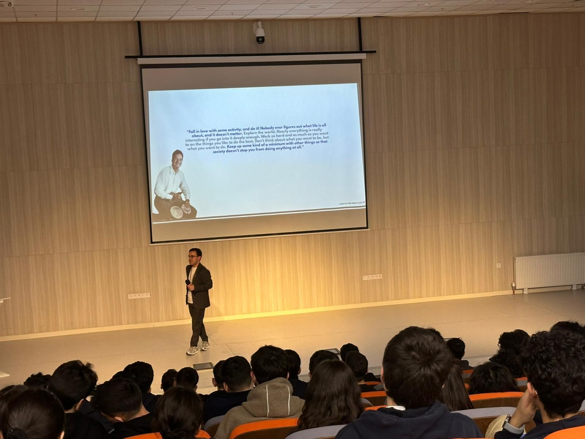
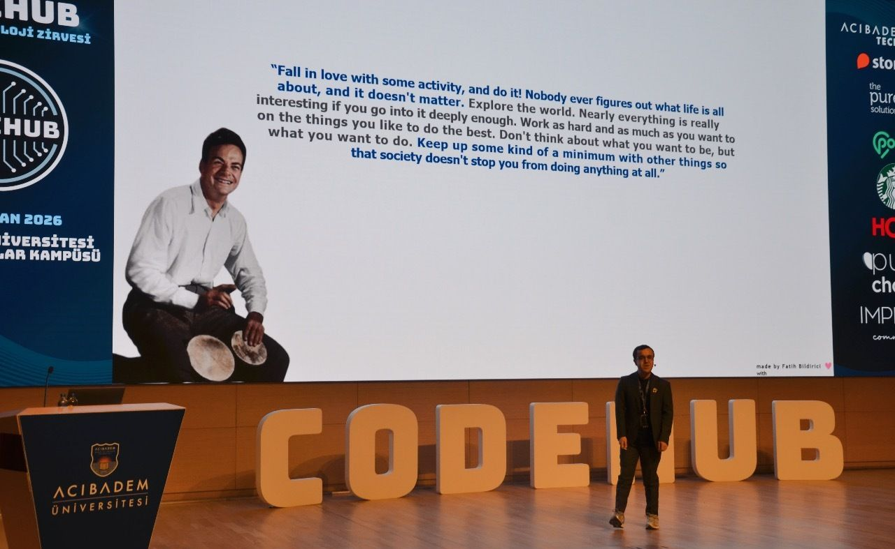
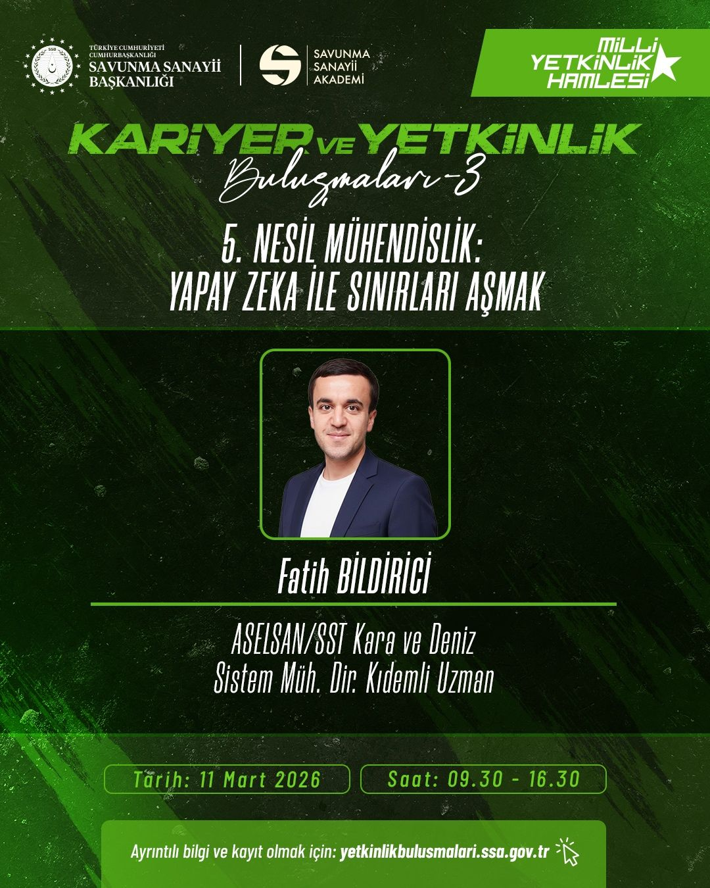
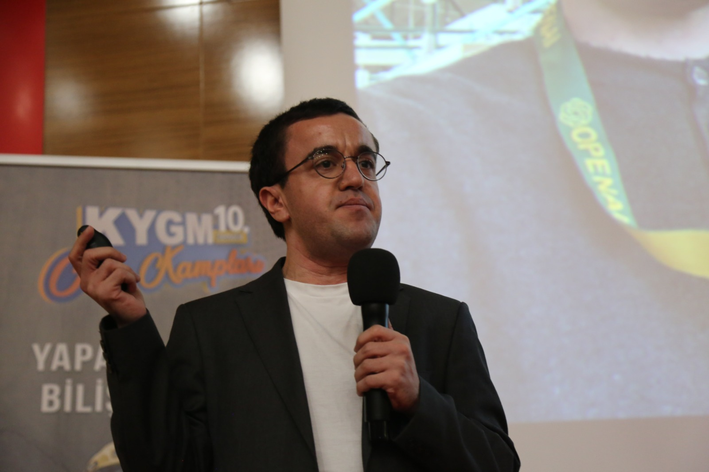
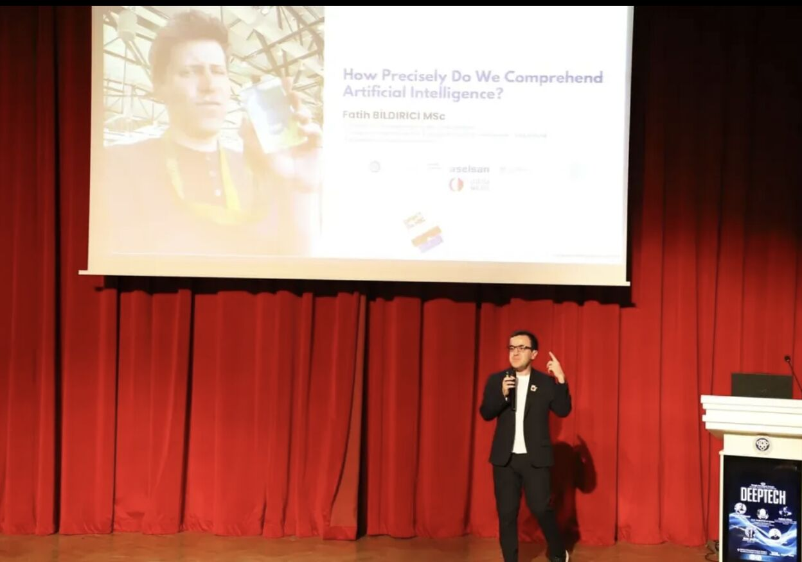

Konuşmacı Profili
Etkinliğinize Davet Edin
Konferanstan şirket içi seminere, akademik çalıştaydan topluluk buluşmasına kadar her ölçekte konuşma yapıyorum. Teknik içeriği anlaşılır kılmak temel yaklaşımım.
Yapay zeka araştırmacısı, konuşmacı ve içerik üreticisi. Ankara Üniversitesi'nde Yapay Zeka doktorası, ODTÜ'de Bilişsel Bilimler yüksek lisansı. ASELSAN'da Lider Alan Uzmanı.
Teknik içeriği; araştırmacıdan öğrenciye, yöneticiden mühendise farklı kitlelere erişilebilir kılan bir anlatım tarzı geliştirdim. Konuşmalarımda teori ile pratik arasında köprü kuruyorum: soyut kavramları somut örneklere dönüştürüyorum. Türkiye'nin en çok dinlenen yapay zeka podcastinin kurucusu ve sunucusuyum.
Konuşma Konuları
Açıklanabilir Yapay Zeka (XAI)
Yapay zekanın kararlarını insanlara nasıl açıklayabiliriz? XAI yöntemleri, güven mekanizmaları ve uygulamalı örnekler.
İş Süreçlerine AI Entegrasyonu
Şirketler yapay zekayı nasıl entegre etmeli? Pratik çerçeveler, yaygın hatalar ve öncelik belirleme rehberi.
AI Okuryazarlığı ve Geleceğin İş Gücü
Yapay zeka çağında hangi beceriler kritik? AI okuryazarlığının bireyler ve kurumlar için önemi.
Etik AI ve Sorumlu Yapay Zeka Geliştirme
Taraflılık, şeffaflık, gizlilik. Sorumlu AI geliştirmenin teknik ve kurumsal boyutları.
Büyük Dil Modelleri (LLM) ve Üretken AI
GPT'den ötesi: LLM'lerin çalışma mantığı, sınırları ve kurumsal kullanım senaryoları.
Geçmiş Etkinlikler
Konuşmalar & Etkinlikler

Yapay Zeka ve XAI Uygulamaları
ASELSAN MTAL
Kurumsal AI dönüşümünde açıklanabilirlik, güven ve karar sistemleri

Yapay Zekanın Geleceği
Codehub Technology Summit
İnsan merkezli AI vizyonu, LLM uygulamaları ve sektörel dönüşüm

Defense Industry Academy — XAI
EnX Engineering X
Savunma sanayinde açıklanabilir yapay zeka ve güvenilir sistem tasarımı

5. Nesil Mühendislik: Yapay Zeka ile Sınırları Aşmak
SSA Kariyer & Yetkinlik Buluşmaları
Mühendisliğin geleceği, AI entegrasyonu ve sektörel dönüşüm perspektifi

Explainable Artificial Intelligence
GSB (Gençlik ve Spor Bakanlığı) Kış Kampı
AI okuryazarlığı ve anlaşılabilir yapay zeka çerçevesi

Açıklanabilir Yapay Zeka
GDG DeepTech
Model açıklamaları, kullanım sınırları ve pratik örnekler

AI Business Integration
Future Innovation Leaders
İş dünyasında yapay zeka entegrasyonu ve dönüşüm pratikleri